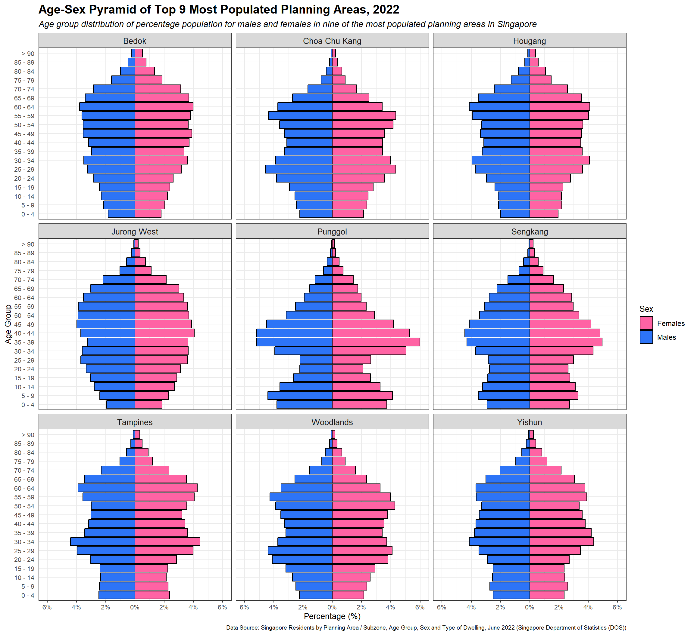

Press to toggle code
pacman::p_load(tidyverse)This document serves as a submission for Take-home Exercise 2 as required by the course ISSS608 Visual Analytics and Applications.
In this exercise, we aim to apply the different data visualization design practices and principles and improve on the Take-home Exercise 1 output of a fellow classmate.
A review of Take-home Exercise 1
How do we analyze population trends? One common graphical representation is the age-sex pyramid, also known as the population pyramid. It reveals the past and present of one’s population, and gives an idea of the mortality and fertility rates of a country. In this exercise, we used Tableau to create age-sex pyramids of nine planning areas of Singapore in a single view using a trellis chart.
The dataset used was “Singapore Residents by Planning Area / Subzone, Age Group, Sex and Type of Dwelling, June 2022”, which is available from the Department of Statistics, Singapore.
In this section, we focus on preparing our R environment for the task at hand.
The code chunk below loads our favorite package, tidyverse into the R environment. Once again, tidyverse is a collection of packages that will help with all the data and visualizations.
pacman::p_load(tidyverse)Using read_csv(), we load our data set ‘respopagesextod2022.csv’ into the R environment as a tibble.
pop_data <- read_csv("data/respopagesextod2022.csv")We have 10,098 rows and 7 columns, namely: ‘PA’, ‘SZ’, ‘AG’, ‘Sex’, ‘TOD’, ‘Pop’, and ‘Time’. For this exercise, we don’t need several of these rows (only focusing on Top 9 populated planning areas) and columns (‘SZ’, ‘TOD’, and ‘Time’ are unnecessary).
The code chunk below uses the functions group_by() and summarise() to sum the ‘Pop’ of the rows grouped by ‘PA’, ‘AG’ and ‘Sex’. This creates a new tibble with just ‘PA’, ‘AG’, ‘Sex’ and collated sum of ‘Pop’ (shown as ‘sum(Pop)’) as columns.
pop_data <- pop_data %>%
group_by(PA, AG, Sex) %>%
summarise(sum(Pop))
head(pop_data)# A tibble: 6 × 4
# Groups: PA, AG [3]
PA AG Sex `sum(Pop)`
<chr> <chr> <chr> <dbl>
1 Ang Mo Kio 0_to_4 Females 2480
2 Ang Mo Kio 0_to_4 Males 2530
3 Ang Mo Kio 10_to_14 Females 3320
4 Ang Mo Kio 10_to_14 Males 3350
5 Ang Mo Kio 15_to_19 Females 3620
6 Ang Mo Kio 15_to_19 Males 3780For ease of use, we rename ‘sum(Pop)’ as ‘Pop’ using colnames().
colnames(pop_data) <- c("PA", "AG", "Sex", "Pop")Now to get just the top 9 most populated planning areas, we use the function top_n(). First however, we run pop_data %>% group_by(PA) %>% summarise(sum(Pop)) to create a tibble with just the total populations of all the planning areas and use it as the first argument of top_n(). The second argument is the number of top elements, and the third argument is the column or variable to base the ranking on, which is ‘sum(Pop)’. Adding the $PA at the end of the argument allows us to take only the names of the planning areas.
top_9 <- top_n(pop_data %>%
group_by(PA) %>%
summarise(sum(Pop)),
9,
`sum(Pop)`)$`PA`Now with the list of planning areas, we can filter() our data to only the top 9 most populated ones.
top_9_data <- filter(pop_data, PA %in% as.vector(top_9))In this section, we go over the subject of the improvements, what can be improved, and how we build the new visualization on R.
This visualization was taken from Take-home_Ex01_Dashboard | Tableau Public.
From first impression, there are several observations to give feedback on.
There’s a lot going on. There’s a lot of graphs, a lot of bars, and lots of numbers that aren’t very clear. The numerical labels also tend to block the visuals of the bar graph, making it hard to distinguish the edges. For the sake of the assignment as well, it does not seem necessary to include the age-sex pyramid of the whole Singapore, and population of each planning area. The gray bars seem to be the total population of each age group used to compare to each of the sexes, however, it also seems very unnecessary to the purpose of the age-sex pyramid. The label of “Planning Area” is also just taking up space, but it should be clear that the strip names are the planning areas from the title.

The unit of measurement. While there are age-sex pyramids that use the actual population values, it may be easier to digest percentages compared to looking at large values. It also helps the axis labels look cleaner. Using percentages should not take away from the structure of the pyramid.
The trellis chart is one row and affects the pyramids. Because all nine age-sex pyramids are lined up in a row, the bars become compressed. They now give the wrong impression, appearing more like a “stationary” structure rather than “constrictive- basically it affects the shape, therefore affecting the interpretation.
The ‘Age Group’ axis labels. While still very much readable, the presence of the underscores (‘_’) are unsightly.
With these in mind, we can start building our new age-sex pyramid trellis chart.
In order to get change the axis to percentages, there are some revisions to be made to our top_9_data tibble. By using aggregate() we can get the total population for each planning area. After joining that tibble to top_9_data to add a ‘Total’ column, we can add a new column using mutate() that computes for the ‘Percentage’ using ‘Pop’ over ‘Total’.
top_9_sum <- setNames(aggregate(x = top_9_data$Pop,
by = list(top_9_data$PA),
FUN = sum),
c("PA","Total"))
top_9_data <- top_9_data %>%
left_join(top_9_sum,
by='PA') %>%
mutate(`Percentage` = `Pop`/`Total`)
glimpse(top_9_data)Rows: 342
Columns: 6
Groups: PA, AG [171]
$ PA <chr> "Bedok", "Bedok", "Bedok", "Bedok", "Bedok", "Bedok", "Bedo…
$ AG <chr> "0_to_4", "0_to_4", "10_to_14", "10_to_14", "15_to_19", "15…
$ Sex <chr> "Females", "Males", "Females", "Males", "Females", "Males",…
$ Pop <dbl> 4970, 5090, 6220, 6440, 6660, 6770, 7310, 7860, 8820, 9060,…
$ Total <dbl> 278640, 278640, 278640, 278640, 278640, 278640, 278640, 278…
$ Percentage <dbl> 0.01783664, 0.01826730, 0.02232271, 0.02311226, 0.02390181,…By running the function str_replace(), we change the substring “_to_” to ” - “, effectively removing the underscores. We also change”90_and_over” to “> 90” for easy comprehension.
top_9_data$AG <- str_replace(top_9_data$AG, "_to_", " - ")
top_9_data$AG <- str_replace(top_9_data$AG, "90_and_over", "> 90")The code chunk below gets us started with building our age-sex pyramid. Each geom_bar() is divided into a subset that is filtered by sex. We use coord_flip() to reverse the x and y axis.
ggplot(top_9_data, aes(x = AG,
y = Percentage,
fill = Sex)) +
geom_bar(data = subset(top_9_data,
Sex == "Males"),
stat = 'identity') +
geom_bar(data = subset(top_9_data,
Sex == "Females"),
stat = 'identity') +
coord_flip()
Now we have the issue of the two bars representing males and females overlapping each other. To solve this, we change the ‘Percentage’ values for “Males” to be negative using the code chunk below.
top_9_data <- top_9_data %>%
mutate(Percentage = ifelse(Sex == "Males",
-Percentage,
Percentage))
head(top_9_data)# A tibble: 6 × 6
# Groups: PA, AG [3]
PA AG Sex Pop Total Percentage
<chr> <chr> <chr> <dbl> <dbl> <dbl>
1 Bedok 0 - 4 Males 5090 278640 -0.0183
2 Bedok 0 - 4 Females 4970 278640 0.0178
3 Bedok 5 - 9 Males 5960 278640 -0.0214
4 Bedok 5 - 9 Females 5700 278640 0.0205
5 Bedok 10 - 14 Males 6440 278640 -0.0231
6 Bedok 10 - 14 Females 6220 278640 0.0223There’s also the issue of the age group “5-9” appearing between “45-49” and “50-54” due to alphabetical sorting of the strings. To fix this, we declare a vector with the right arrangement of the age group categories.
AG_sort = c("0 - 4","5 - 9","10 - 14", "15 - 19", "20 - 24", "25 - 29", "30 - 34", "35 - 39", "40 - 44", "45 - 49","50 - 54","55 - 59","60 - 64","65 - 69","70 - 74","75 - 79", "80 - 84","85 - 89","> 90")Now with the changes made above, we can try running our ggplot model again with a few new changes. First we have scale_y_continuous() which we use to fix the percentage labels. Then we have scale_x_discrete() to set ‘limits’ to follow AG_sort.
ggplot(top_9_data, aes(x = AG,
y = Percentage,
fill = Sex)) +
geom_bar(data = subset(top_9_data,
Sex == "Males"),
stat = 'identity') +
geom_bar(data = subset(top_9_data,
Sex == "Females"),
stat = 'identity') +
scale_y_continuous(labels = function(x) paste0(abs(x*100),
"%"),
limits = c(-0.6, 0.6)) + # new
scale_x_discrete(limits = AG_sort) + # new
coord_flip()
Now we’re ready to turn our single row trellis chart to one that is distributed evenly as a 3x3 chart. Fortunately, ggplot2 provides a function called facet_wrap() which allows us to generate panels for each planning area.
ggplot(top_9_data, aes(x = AG,
y = Percentage,
fill = Sex)) +
geom_bar(data = subset(top_9_data,
Sex == "Males"),
stat = 'identity') +
geom_bar(data = subset(top_9_data,
Sex == "Females"),
stat = 'identity') +
scale_y_continuous(labels = function(x) paste0(abs(x*100), "%"),
limits = c(-0.06, 0.06)) +
scale_x_discrete(limits = AG_sort) +
coord_flip() +
facet_wrap(~ PA, nrow = 3) # newly added line
Now we can clearly see the shape of each of the pyramids.
The ‘Age Group’ labels seem to be a bit too compressed. Our legend is also unnecessarily large. Using theme() and setting element_text() we can format the different text in our chart.
ggplot(top_9_data, aes(x = AG,
y = Percentage,
fill = Sex)) +
geom_bar(data = subset(top_9_data,
Sex == "Males"),
stat = 'identity') +
geom_bar(data = subset(top_9_data,
Sex == "Females"),
stat = 'identity') +
scale_y_continuous(labels = function(x) paste0(abs(x*100), "%"),
limits = c(-0.06, 0.06),
breaks = seq(-0.06,0.06, by = 0.02)) +
scale_x_discrete(limits = AG_sort) +
coord_flip() +
theme(axis.text = element_text(size = 7),
axis.title = element_text(size = 9),
legend.text = element_text(size = 8),
legend.title = element_text(size = 9)) +
xlab("Age Group") +
facet_wrap(~ PA, nrow = 3)This is an important part of any graph, chart or visualization. While it’s important to show and not tell, it’s important to set the context of what the person is viewing. Using labs() we can set the ‘title’, ‘subtitle’ and ‘caption’ as shown.
ggplot(top_9_data, aes(x = AG,
y = Percentage,
fill = Sex)) +
geom_bar(data = subset(top_9_data,
Sex == "Males"),
stat = 'identity') +
geom_bar(data = subset(top_9_data,
Sex == "Females"),
stat = 'identity') +
scale_y_continuous(labels = function(x) paste0(abs(x*100), "%"),
limits = c(-0.06, 0.06),
breaks = seq(-0.06,0.06, by = 0.02)) +
scale_x_discrete(limits = AG_sort) +
coord_flip() +
theme(axis.text = element_text(size = 7),
axis.title = element_text(size = 9),
legend.text = element_text(size = 8),
legend.title = element_text(size = 9),
plot.title = element_text(size = 14,
face = "bold"), # new
plot.subtitle = element_text(size = 10), #new
plot.caption = element_text(size = 6), #new
strip.text = element_text(size = 8)) + #new
xlab("Age Group") +
ylab("Percentage (%)") +
labs(title = "Age-Sex Pyramid of Top 9 Most Populated Planning Areas, 2022", #new
subtitle = "Age group distribution of percentage population for males and females in nine of the most populated planning areas in Singapore", #new
caption ="Data Soruce: Singapore Residents by Planning Area / Subzone, Age Group, Sex and Type of Dwelling, June 2022 (Singapore Department of Statistics (DOS))") + #new
facet_wrap(~ PA, nrow = 3)
By adding theme_bw() (from the given theme elements) we get a cleaner grid and sharper panels. The fill colors for the ‘Sex’ were also changed using scale_fill_manual().
ggplot(top_9_data, aes(x = AG,
y = Percentage,
fill = Sex)) +
geom_bar(data = subset(top_9_data,
Sex == "Males"),
stat = 'identity') +
geom_bar(data = subset(top_9_data,
Sex == "Females"),
stat = 'identity') +
scale_y_continuous(labels = function(x) paste0(abs(x*100), "%"),
limits = c(-0.06, 0.06),
breaks = seq(-0.06,0.06, by = 0.02)) +
scale_x_discrete(limits = AG_sort) +
coord_flip() +
theme_bw() + # new
theme(axis.text = element_text(size = 7),
axis.title = element_text(size = 9),
legend.text = element_text(size = 8),
legend.title = element_text(size = 9),
plot.title = element_text(size = 14,
face = "bold"),
plot.subtitle = element_text(size = 10,
face = "italic"),
plot.caption = element_text(size = 6),
strip.text = element_text(size = 8)) +
xlab("Age Group") +
ylab("Percentage (%)") +
labs(title = "Age-Sex Pyramid of Top 9 Most Populated Planning Areas, 2022",
subtitle = "Age group distribution of percentage population for males and females in nine of the most populated planning areas in Singapore",
caption ="Data Soruce: Singapore Residents by Planning Area / Subzone, Age Group, Sex and Type of Dwelling, June 2022 (Singapore Department of Statistics (DOS))") +
scale_fill_manual(values=c("#ff63a4", # new
"#2d74f7")) + # new
facet_wrap(~ PA, nrow = 3)
With this we have our final product.